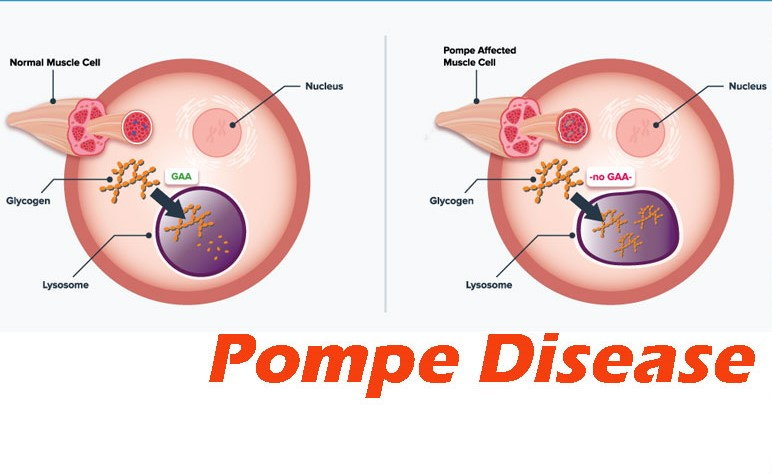

Glycogen Storage Disease / Glycogenoses
โรคนี้เป็นโรคที่ถ่ายทอดโดยพันธุกรรมผ่านทาง autosomal recessive gene เป็นโรคที่มีปัญหาเกี่ยวกับ การสร้างหรือสลายไกลโคเจนที่สะสมอยู่ในร่างกายซึ่งจะมีหลากหลายรูปแบบ แต่ในบทความนี้จะยกตัวอย่างมา 3 ประเภทที่พบบ่อย
Type I glycogen storage disease / von Gierke disease
เกิดจากการขาด glucose 6-phosphatase ธรรมดานั้นเอนไซม์ตัวนี้จะพบใน ตับ ลําไส้เล็กตอนต้น และ ไตชั้นนอก มีหน้าที่ในการเปลี่ยน glucose 6-phosphate ให้กลายเป็น glucose โดยเป็นบทบาทสําคัญใน กระบวนการ gluconeogenesis ซึ่งคือกระบวนการนําน้ําตาลเข้าสู่กระแสเลือดเมื่ออดอาหารหรือออกกําลังกาย นั่นเอง ทําให้ในตอนเช้าตื่นมาจะมีภาวะ hypoglycemia หรือก็คือน้ําตาลในเลือดต่ํา ทําให้อ่อนเพลีย นอกจากนี้ อาจทําให้น้ําตาลไปเลี้ยงสมองไม่พอ และเนื่องจาก มี glucose 6-phosphate ที่สูงจึงสามารถเปลี่ยนไปเป็น glucose 1-phosphate ได้มากและเปลี่ยนไปเป็น glycogen ได้มากจึงทําให้เกิดการสะสมของ glycogen นั่นเอง นอกจากนี้ยังสามารถทําให้เกิด lactic acidosis , hypertriglyceridemia , hepatomegaly ได้อีกด้วย
Type II glycogen storage disease / Pompe disease
เกิดจากการขาด lysosomal alpha-glucosidase / acid maltase ซึ่งเป็นเอนไซม์ที่มีหน้าที่ในการตัด glucose ตัวสุดท้ายจากแขนงของ glycogen ออกมา glycogen storage disease ประเภทนี้ถือว่าเป็นประเภทที่ ค่อนข้างรุนแรงเพราะเป็นรูปแบบของ infantile-onset หรือก็คือแสดงอาการตั้งแต่เกิด ด้วยอาการหัวใจโต ตับโต และกล้ามเนื้อโต หากไม่รักษาจะตายใน 2 ปี จากภาวะ cardiorespiratory failure และ muscle weakness
Type III glycogen storage disease / Cori disease
เกิดจากการขาดเอนไซม์debranching ซึ่งเป็นเอนไซม์ที่ช่วยในการสลาย glycogen โดยที่ glycogen storage disease ประเภทนี้ถือว่าเป็นประเภทที่ส่งผลกระทบต่อทั้งหัวใจ ตับ และกล้ามเนื้อ แต่ไม่รุนแรงเท่า ประเภทที่ 2 โดยในเด็กนั้นจะทําให้เกิดภาวะ hepatomegaly หรือตับโต และจะมีภาวะเหนื่อยง่ายเมื่อออกกําลัง กาย ในวัย 30-50 อาจเกิดการสูญเสียปริมาตรของกล้ามเนื้อ และ เกิดภาวะ cardiomyopathy หรือการหดตัว ของกล้ามเนื้อหัวใจผิดปกติ